Land-Based Activities
Gallery
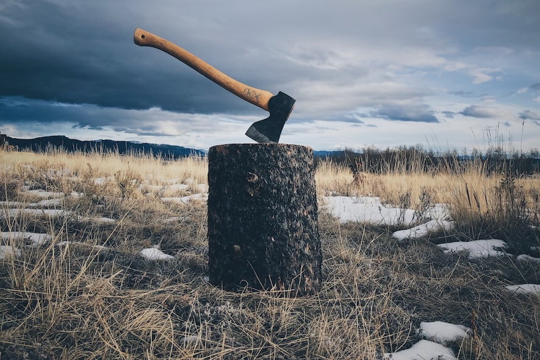
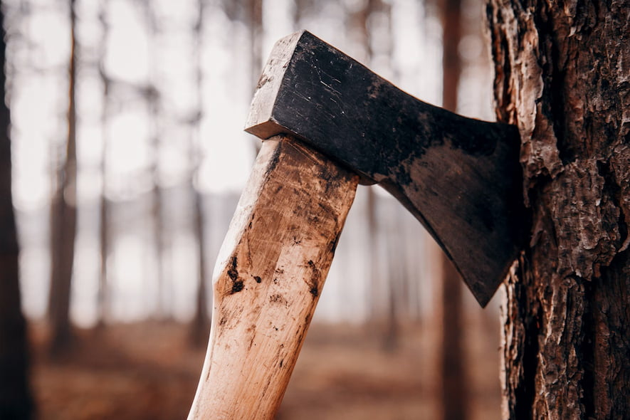
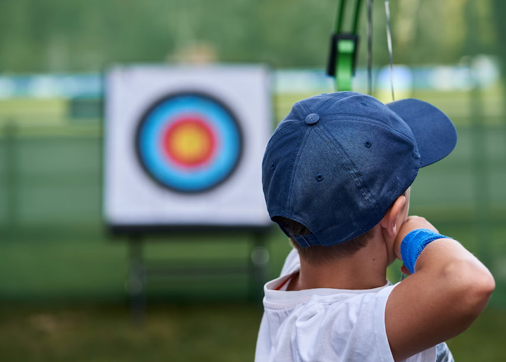
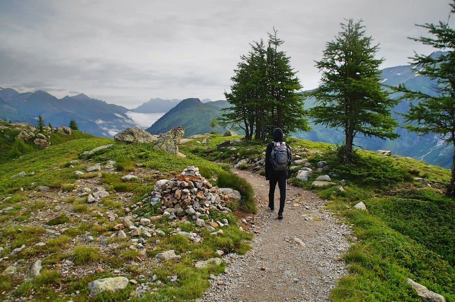
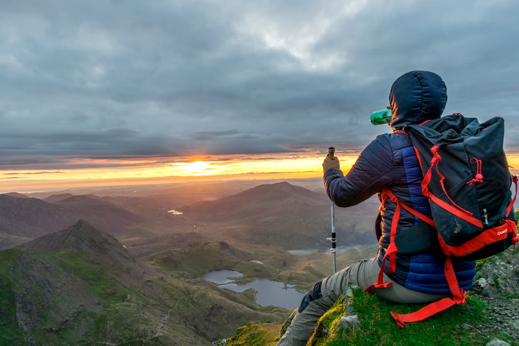
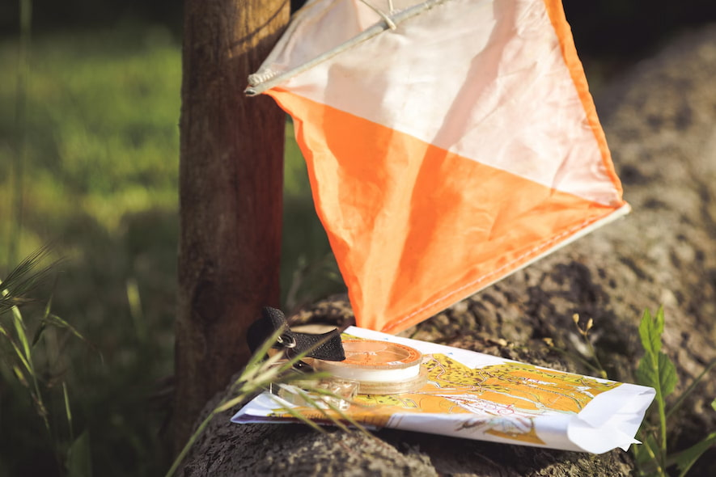
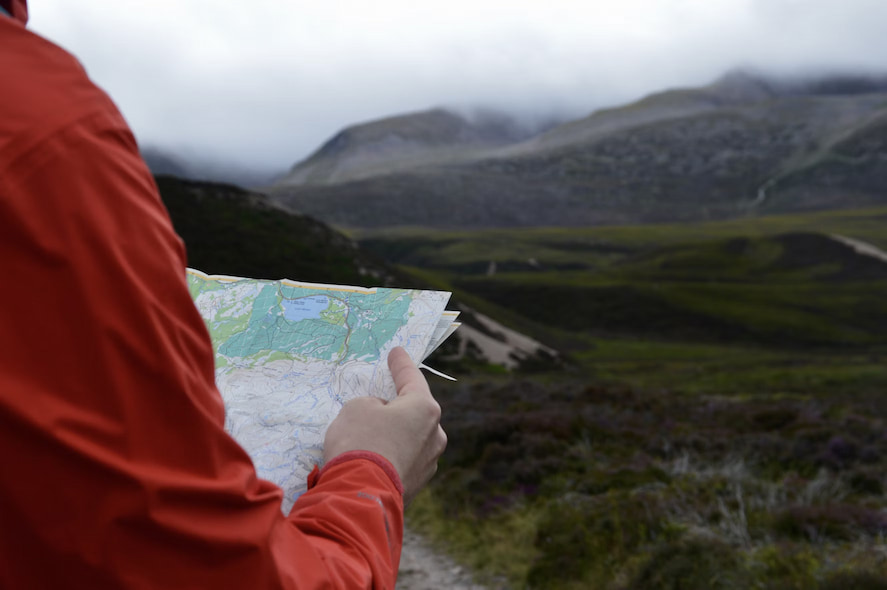
Visitors can take part in a wide range of land-based activities on and off site including hillwalking, archery, orienteering and axe throwing.
- Hillwalking - Ages 6+
- Archery - Ages 6+
- Orienteering - Ages 6+
- Axe Throwing - Ages 10+
Water-Based Activities
Gallery
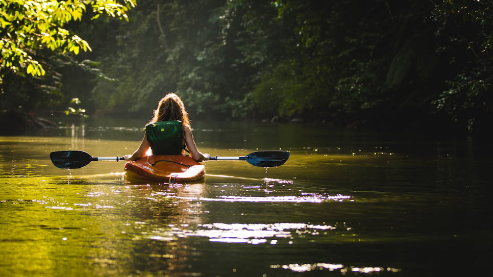
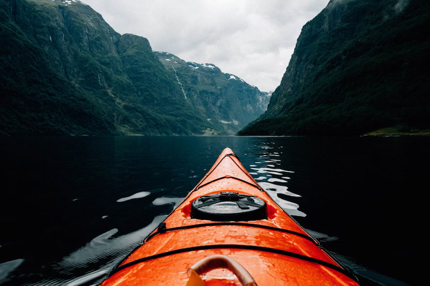
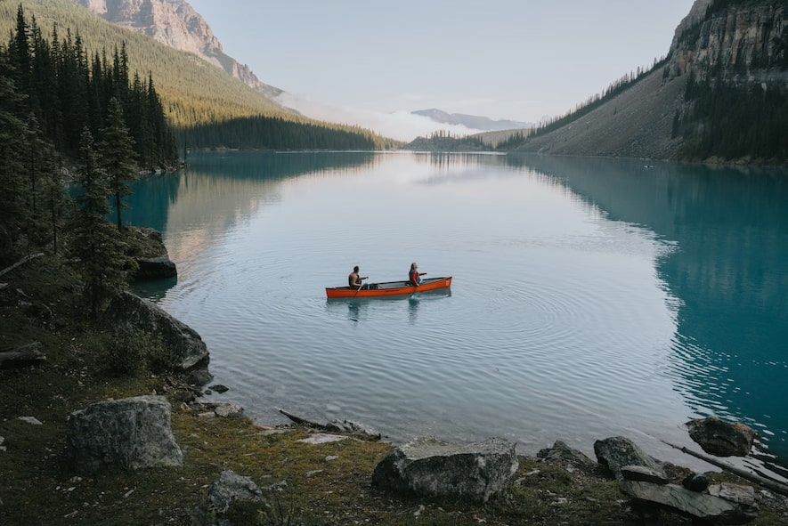
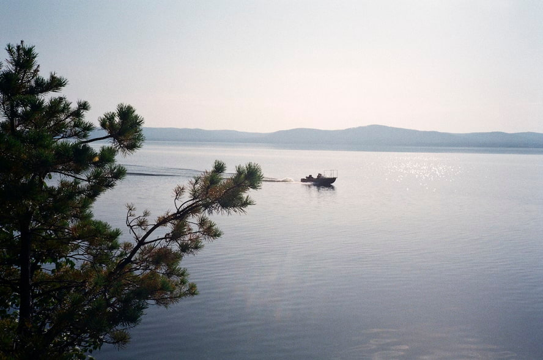
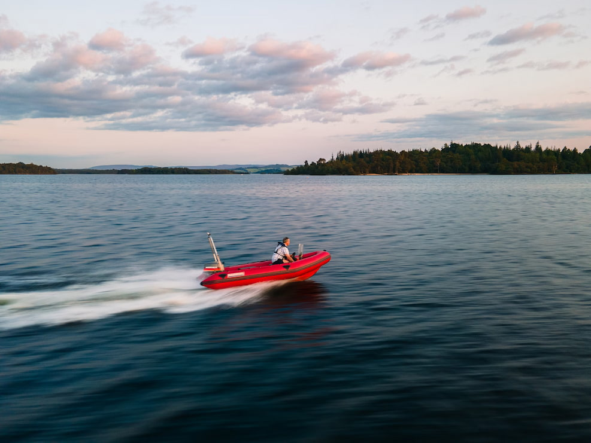
Water-based activities all take place on Lochquarry itself and include kayaking, canoeing and powerboating.
- Kayaking - Ages 8+
- Canoeing - Ages 6+
- Powerboating - Ages 12+
Rope-Based Activities
Gallery
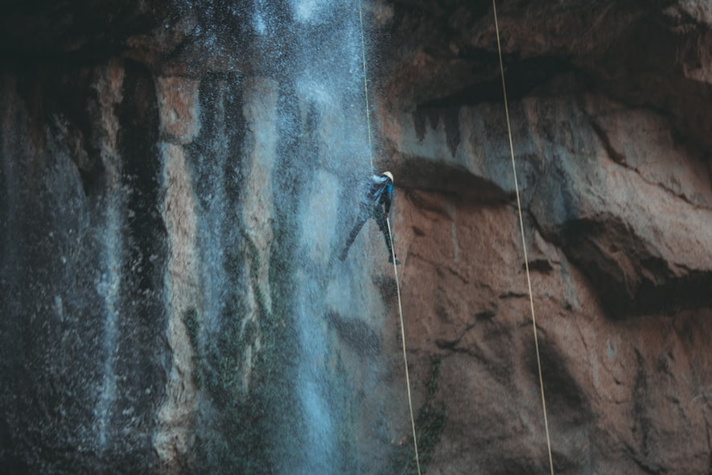
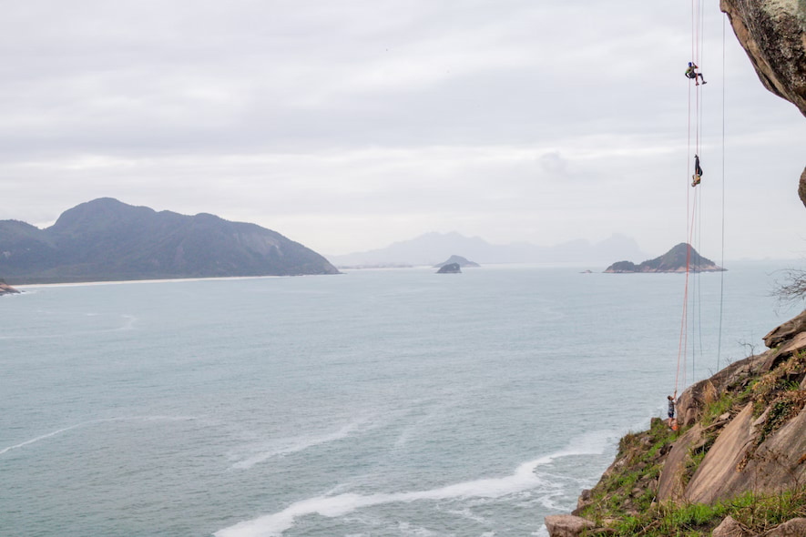
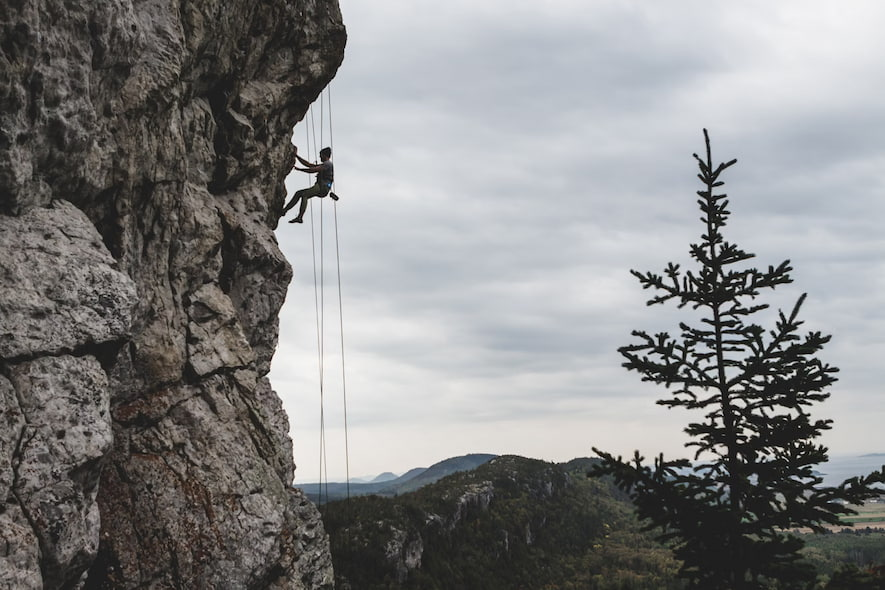
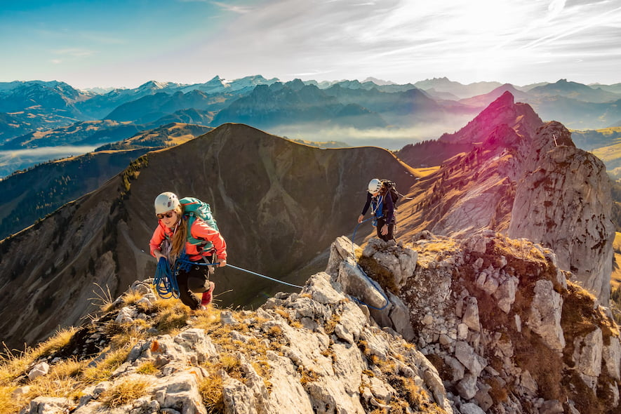
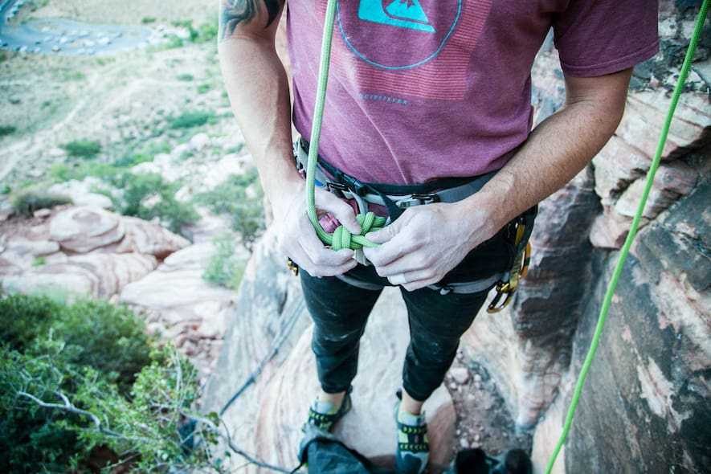
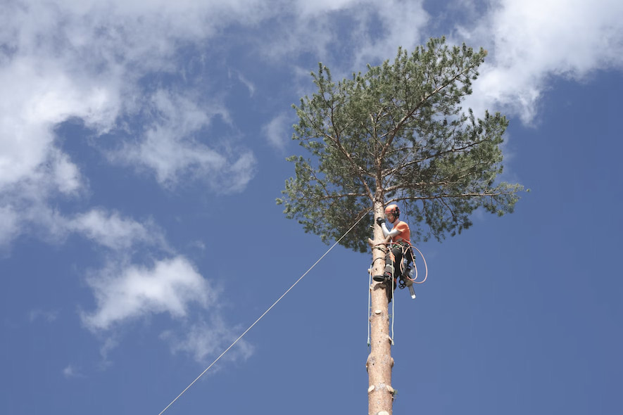
Rope-based activities take place on site with full safety equipment provided.
- Climbing - Ages 8+
- Abseiling - Ages 8+
- Pole Climb - Ages 8+
Customer Review
“The archery was brilliant, but not as good as axe throwing!” - Scott, aged 13